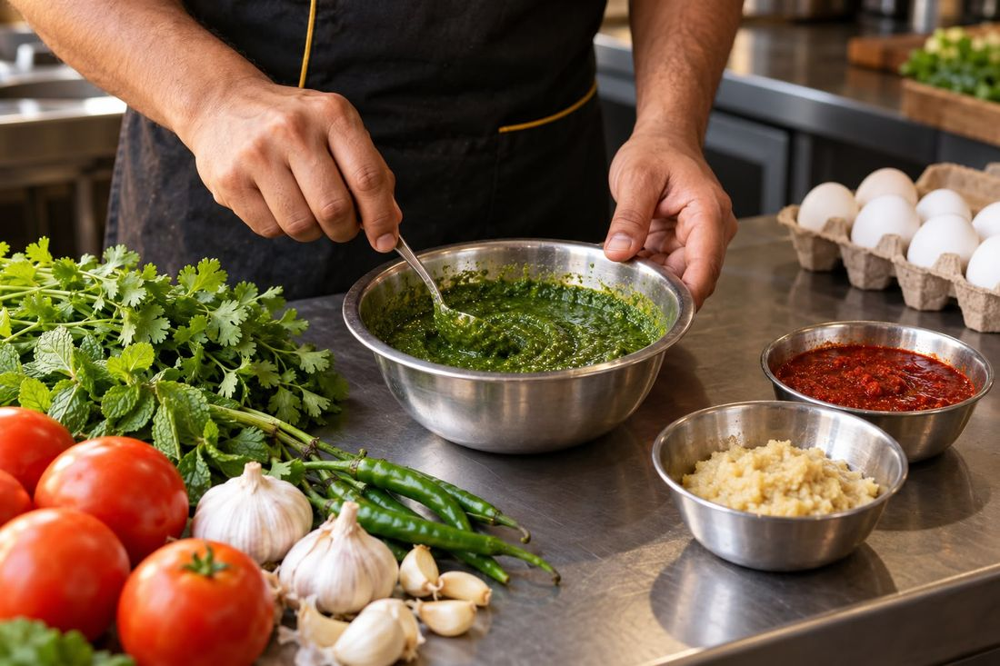
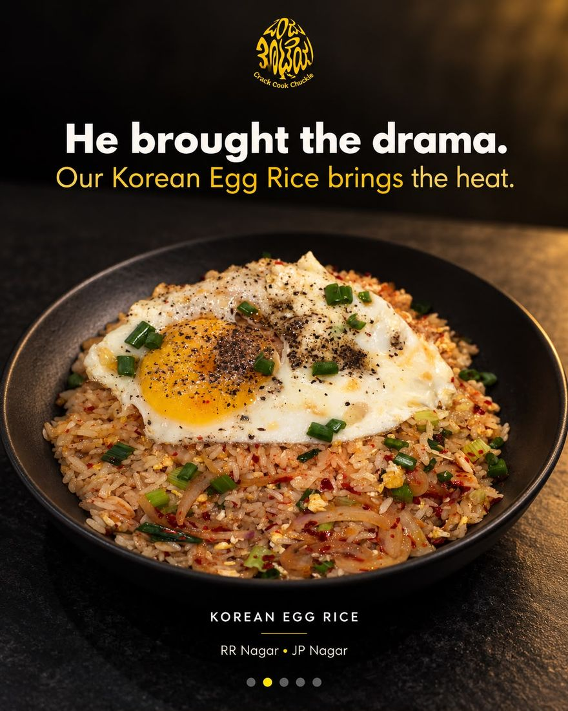
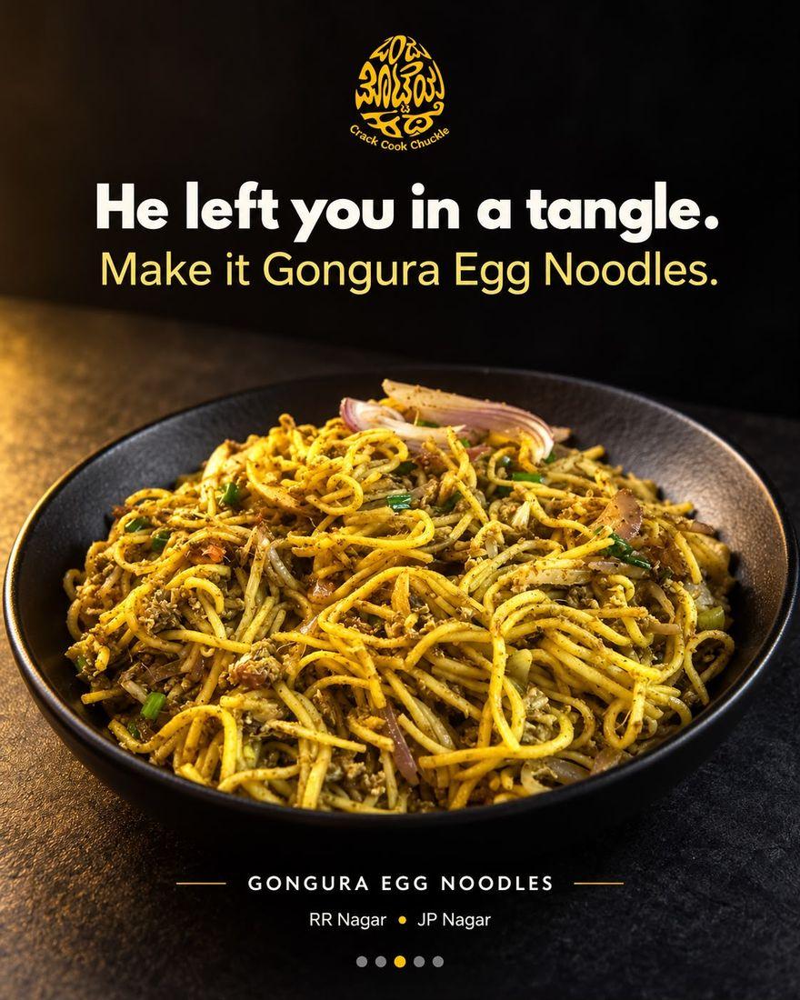
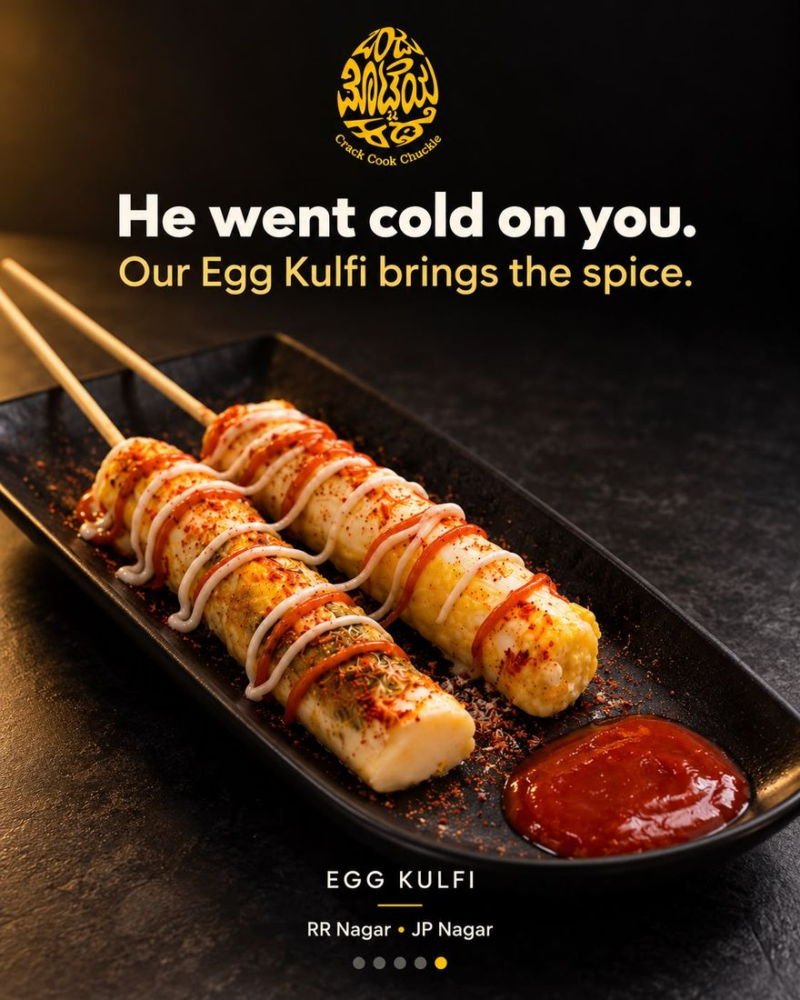
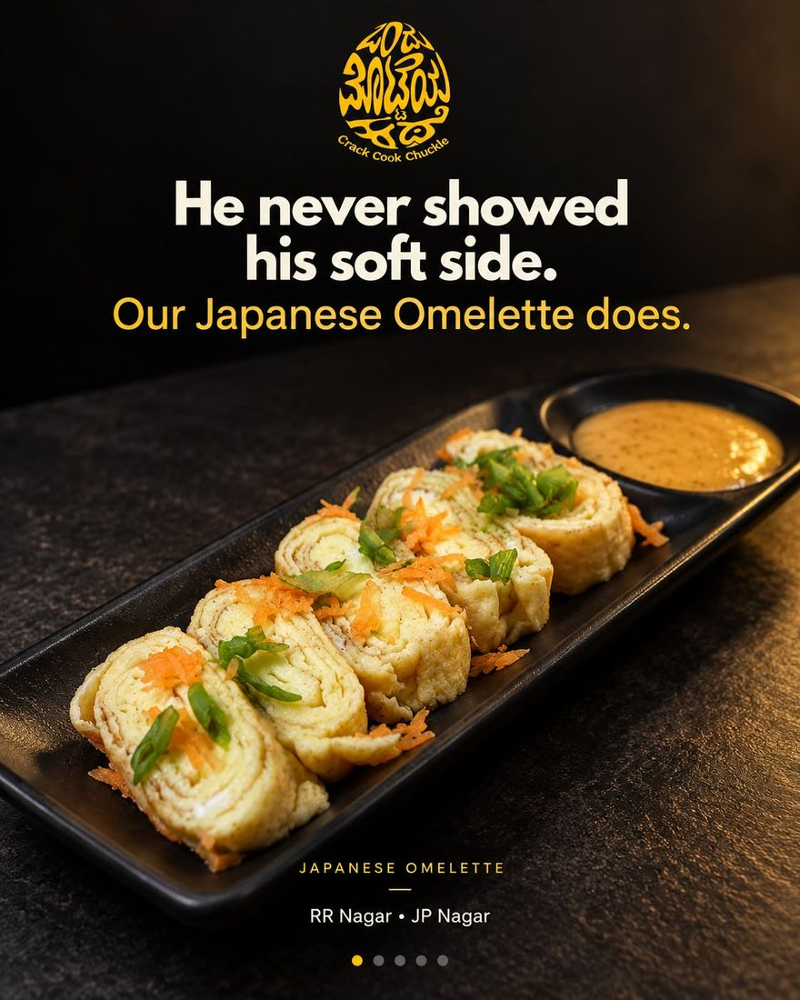
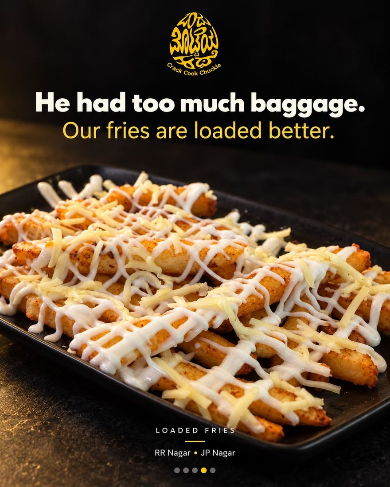

Born in Karnataka. Loved for our flavour. Growing with our people.
One small outlet. A bigger story with every plate.
Ondu Motteya Kathe · Crack. Cook. Chuckle.
From desi street-style favourites to egg dishes inspired by kitchens around the world, discover food with an unmistakable OMK personality.
Our recipes. Our signature sauces. Our love for bringing people together.
From desi streets to world-inspired plates.
Rooted in familiar flavours. Curious about everything an egg can become.
Some cravings feel like home: a spicy egg preparation, a comforting rice dish, the unmistakable flavour of desi street food.
Others invite you to explore: a Japanese-style omelette, Korean-inspired egg rice, shakshuka or Turkish eggs. At OMK, both belong at the same table.
Our menu brings local favourites and global inspiration together through recipes developed with our own flavour combinations and signature sauces. Every dish is curated to belong to the OMK experience.
Come for your usual. Discover your next favourite.

Crowd favourites
From Korean egg rice to egg kulfi — a few dishes people come back for. Swipe for more.





Big on flavour. Thoughtful about what goes in.
Food should taste good, and you should feel comfortable asking what goes into it. Our approach begins with carefully prepared sauces, pastes and ingredients that bring flavour to the food.
From a light bite to an indulgent favourite, we want you to choose with clarity and enjoy every mouthful.
Our kitchen commitments
- No palm oil in our cooking
- No added artificial colours in our preparations
- No tasting powder
- No added preservatives in our house-made sauces and pastes
- An open kitchen that brings preparation into view
Come for the food. Settle into the feeling.
An OMK visit should feel welcoming from the moment you walk in. Our spaces bring together the energy of an open kitchen, playful details, Kannada expressions and the warmth of a neighbourhood gathering place.
Come with your friends after a long day. Bring your family for a familiar favourite. Drop in alone for a meal and a little breathing room. There is room for laughter, conversations and the comfort of being yourself.

Some of our warmest welcomes come on four paws.
Our dog-friendly spaces welcome you and your four-legged family members, with care and consideration for everyone sharing the café. Meet Gunda and the companions who bring their own personality, warmth and joy to our journey.
Because belonging has room for paws, too.
Meet our companions →Growing because people believed in us.
Every recommendation, repeat visit and friend brought along has helped this homegrown brand find its place. You have introduced us to your families, made us part of your catch-ups and shared your favourite dishes with people you love. That trust gives our growth meaning — and gives us a responsibility to keep earning it.
You didn't just discover our story. You helped it grow.
Be part of the next chapter.
Build your career with us
Bring your curiosity, commitment and willingness to learn. Grow alongside a homegrown brand with bigger ambitions.
Explore careers →Grow with OMK
We're looking for franchise partners who believe in our food, respect our standards and share our commitment to people.
Enquire about a franchise →Ondu Motteya Kathe
Crack. Cook. Chuckle.
ನಮ್ಮ ನೆಲದಿಂದ. ನಮ್ಮ ಜನರ ಪ್ರೀತಿಯಿಂದ. ಜಗತ್ತಿನತ್ತ.
From our home. With our people's love. Towards the world.